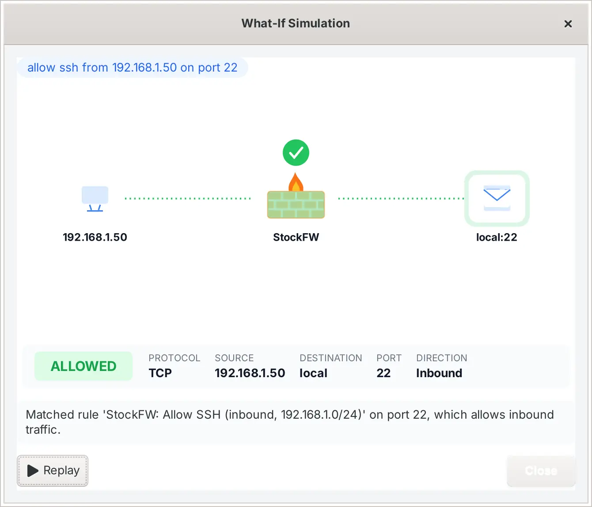

What-if simulator
Type a sentence about a connection and the simulator tells you whether your saved policy would allow or block it, which rule decided, and why. It is a question, not a change: simulating writes nothing.

Where it lives#
In the box at the bottom of the Copilot page, in the dashboard, and as stockfw simulate on the command line. All three run the same code against the same policy files, and a test asserts that the window, the command line and the dashboard give the same verdict for the same sentence. Verified test-cli.sh
How to phrase a question#
The grammar is deliberately small, so what gets evaluated is always what you typed and nothing the simulator guessed. Words can come in any order.
| You write | It means |
|---|---|
inbound, incoming, or from an address | Traffic arriving at this computer. With neither word, from means inbound. |
outbound, outgoing, or to an address | Traffic leaving this computer. |
an address or network: 203.0.113.50, 192.168.1.0/24, 2001:db8::5 | The remote end. |
port 22, 22 port, or a service name: ssh, rdp, https, dns, telnet | The local port for inbound, the remote port for outbound. A service name is looked up to its port; a number wins over a name when both appear. |
udp, icmp, ping | The protocol. Without one of these, TCP. |
allow ssh …, block dns … | The word after allow names the service; the verb itself is not part of the question (the simulator answers what the policy does, not what you want). |
allow ssh from 192.168.1.50 on port 22
inbound rdp from 203.0.113.50
outbound tcp to 198.51.100.66 port 443
outbound telnet to 203.0.113.7
inbound udp port 53
ping from 10.0.0.9A sentence with no direction, no port and no address cannot be answered; the window says “Couldn’t understand this query” and shows examples instead of guessing.
How a verdict is reached#
- The sentence is parsed into a scenario: direction, protocol, port, remote address, and the service or program named.
- The saved policy is compiled into the same firewall rules Apply would create, with the same names.
- The scenario is matched against those rules in the engine’s order: a matching block wins over a matching allow, a matching allow over the default, and the default is deny inbound, allow outbound.
- The answer names the deciding rule, or says that no rule matched and the default applied, and when the verdict is BLOCKED it suggests the exact rule that would allow it.
The policy it reads is the saved one, so the simulator can rehearse a change before Apply: add a rule, simulate, and only then push. With Audit-only on, you can even press Apply and watch the counts without the engine changing. Verified test_apply_gate

The window#
The verdict plays as a short animation: the packet leaves its source, reaches the wall, and either passes through to its destination or is turned back. Under it, the badge reads ALLOWED or BLOCKED, then the question as you typed it, the scenario as the simulator understood it (protocol, from, to, port, direction), the rule that decided, and the explanation. Replay runs the animation again. The window is a GTK drawing with no images, so it renders the same on every theme. Verified ui-simviz-smoke

Create This Rule#
When the verdict is BLOCKED and the simulator can express the rule that would allow it, Create This Rule appears. It prints the rule in a Yes/No dialog, exactly as it will be written to the policy file. After Yes the rule is saved and pushed through the same apply gate as the Policy page, and the result says whether it is live or staged for a later Apply. The simulator never creates a rule on its own, and never a block: blocking is a decision you make on the Policy or Events page.
From a script#
$ stockfw simulate "inbound rdp from 203.0.113.50"
BLOCKED Inbound TCP connection from 203.0.113.50 to local port 3389 (rdp)
Packet inbound TCP port 3389 from 203.0.113.50
Rule Default deny (no matching rule)
Why No rule in the loaded policy matches this connection. Default policy: deny inbound.
To allow Allow inbound TCP port 3389 from 203.0.113.50.
A simulation only: nothing was written.
$ echo $?
5The exit status is 0 for ALLOWED and 5 for BLOCKED, so a deployment script can refuse to continue when a port it needs would be closed. --json gives the verdict, scenario, rule, reason and suggestion as one object. See the command line reference.
What it does not know#
- It answers from the policy, not from the engine. If someone added a rule directly in
wf.mscor withiptables, the simulator does not see it. Known gap - It reasons about new connections. Replies to an already open connection always pass, and the simulator does not model them.
- Threat-intel lists are not consulted yet. When they land, an address the policy allows but a list blocks will be answered “Blocked by threat intel: list”. In progress for 1.0.7